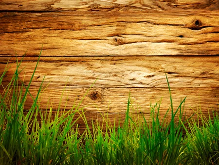
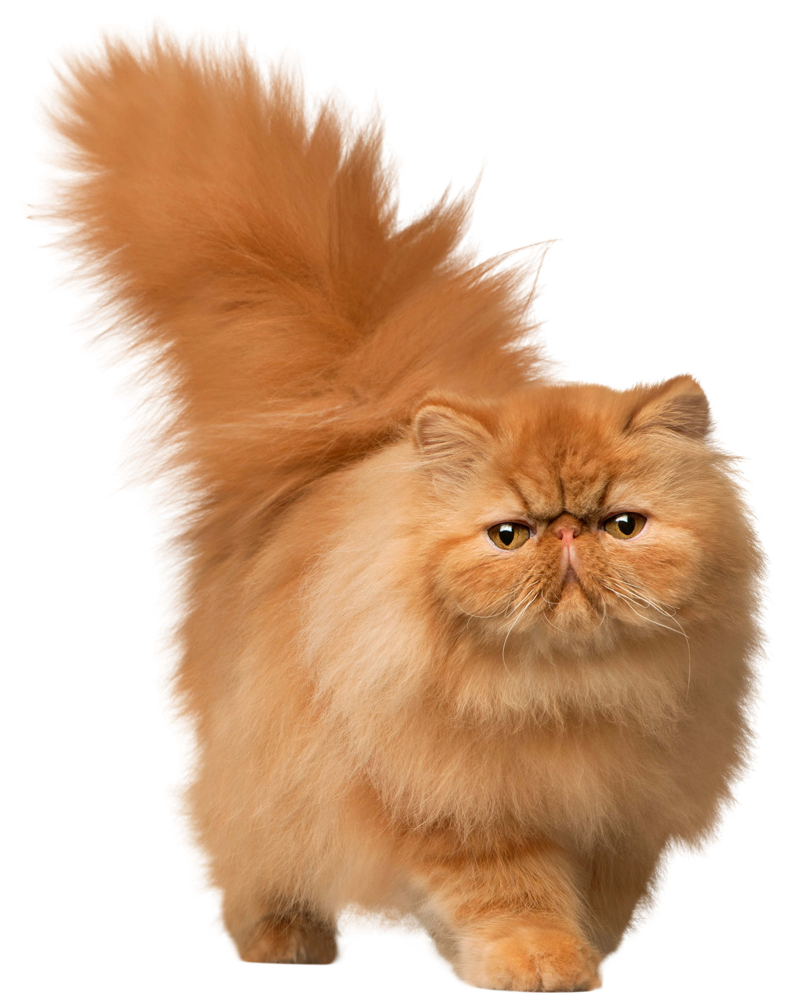

Elegante y grácil, el Persa recibe el nombre de "principe de los gatos". Al parecer, desciende de los gatos de pelo largo que trajo un viajero italiano de Asia Menor en los siglos XVI o XVII. El persa a menudo ha cambiado de aspecto con el transcurso de los siglos. Los primeros tenían un rostro más alargado y un pelaje menos tupido que los actuales. El gato persa actual es un resultado de los cruces con Angoras, llevado a cabo por criadores ingleses del siglo XIX.
Gato Persa
¿Qué lo hace único?
De todos los gatos, el Persa tiene el pelaje más largo y tupido
De todos los gatos, el Persa tiene el pelaje más largo y tupido
Carácter
Tranquilo, dócil, leal. Le gusta llamar la atención y vivir en el interior
Tranquilo, dócil, leal. Le gusta llamar la atención y vivir en el interior